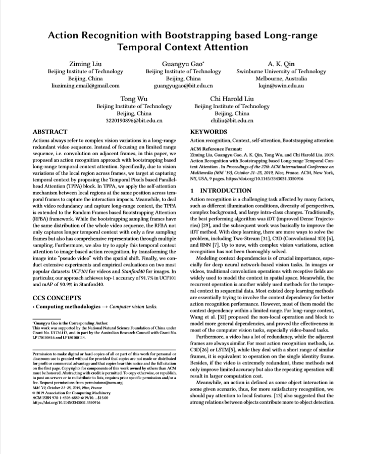

Action Recognition with Bootstrapping based Long-range Temporal Context Attention

Abstract
Actions always refer to complex vision variations in a long-range redundant video sequence. Instead of focusing on a limited range sequence, i.e. convolution on adjacent frames, in this paper we propose an action recognition approach with bootstrapping based long-range temporal context attention. Specifically, due to vision variations of the local region across frames, we target capturing temporal context by proposing the Temporal Pixels based Parallel-head Attention (TPPA) block. In TPPA, we apply the self-attention mechanism between local regions at the same position across temporal frames to capture the interaction impacts. Meanwhile, to deal with video redundancy and capture long-range context, TPPA is extended to the Random Frames based Bootstrapping Attention (RFBA) framework. While the bootstrapping sampling frames have the same distribution as the whole video sequence, RFBA not only captures longer temporal context with only a few sampling frames but also has a comprehensive representation through multiple sampling. Furthermore, we also apply this temporal context attention to image-based action recognition by transforming the image into a “pseudo video” with a spatial shift. Finally, we conduct extensive experiments and empirical evaluations on two popular datasets: UCF101 for videos and Stanford40 for images. In particular, our approach achieves top-1 accuracy of 91.7% on UCF101 and mAP of 90.9% on Stanford40.
Approach

Paper

Ziming Liu, Guangyu Gao, A. K. Qin, Tong Wu, Chi Harold Liu.
Action Recognition with Bootstrapping based Long-range Temporal Context Attention.
ACM Multimedia, 2019.
BibTeX
@inproceedings{actionbootstrapping,
title = {Action Recognition with Bootstrapping Based Long-Range Temporal Context Attention},
author = {Liu, Ziming and Gao, Guangyu and Qin, A. K. and Wu, Tong and Liu, Chi Harold},
booktitle = {Proceedings of the 27th ACM International Conference on Multimedia},
series = {MM '19},
pages = {583--591},
numpages = {9},
address = {New York, NY, USA},
publisher = {Association for Computing Machinery},
isbn = {9781450368896},
year = {2019},
doi = {10.1145/3343031.3350916}
}Acknowledgements
This work was supported by the National Natural Science Foundation of China under Grant No. U1736117, and in part by the Australian Research Council under Grants No. LP170100416 and LP180100114.